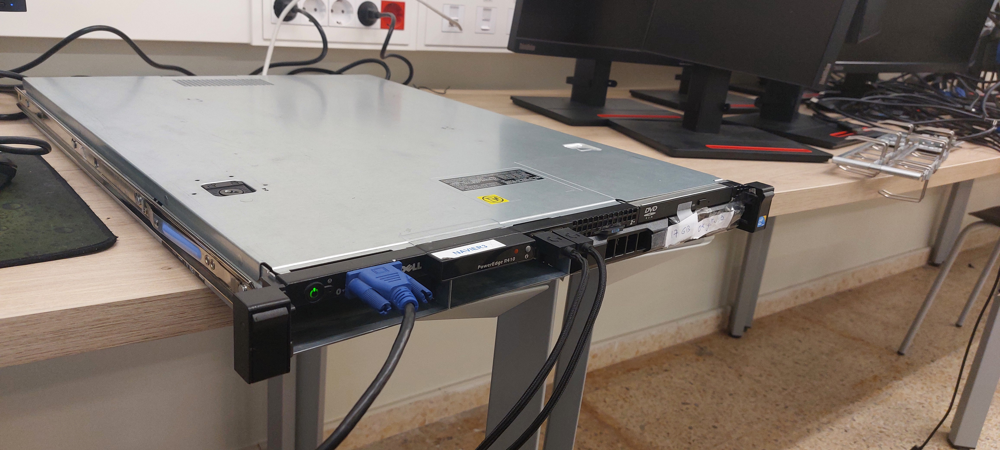

El proyecto tuvo como objetivo principal la creación de un servicio de ayuda humanitaria y paquetería utilizando drones, integrando diversas tecnologías para garantizar el funcionamiento eficiente y seguro del sistema. Desde el inicio, se trabajó en la fabricación del dron desde cero, lo que implicó un proceso detallado de diseño y desarrollo de cada uno de sus componentes, desde la electrónica hasta la estructura física del mismo. Gracias a un enfoque interdisciplinario, logramos fabricar el dron con éxito, lo que representó un hito importante en el proyecto. Uno de los elementos clave del sistema fue la creación de un servidor que almacenaba y gestionaba los recorridos realizados por el dron. Para esto, diseñamos una base de datos robusta que registraba información precisa sobre cada vuelo: desde la hora de inicio hasta la ubicación final de entrega. Esta base de datos permitía tanto el seguimiento en tiempo real como el análisis posterior de los recorridos, asegurando la transparencia y el control de las operaciones. Para facilitar la implementación del servidor, utilizamos Docker, lo que nos permitió crear un entorno aislado y escalable con una distribución Arch Linux. Docker garantizó que el servidor pudiera ser replicado y gestionado de manera eficiente en cualquier entorno, sin importar las variaciones en los sistemas operativos o configuraciones. Además, desarrollamos una página web funcional que servía tanto para los clientes como para los trabajadores del servicio. Los clientes podían acceder a una interfaz intuitiva para agendar citas y solicitudes de paquetería, mientras que los trabajadores del servicio podían ver los pedidos agendados y gestionar los vuelos y entregas. Esta plataforma web mejoró la experiencia del usuario, optimizando el proceso de solicitud y seguimiento de los envíos. Con estos avances, no solo conseguimos un sistema operativo funcional, sino que también logramos un importante paso hacia la automatización de la logística y la entrega de paquetes mediante drones, lo que abre un sinfín de posibilidades para el futuro de la ayuda humanitaria y la paquetería.
Objetivo del Proyecto
El objetivo del proyecto fue crear un servicio de ayuda humanitaria y de paquetería con Drones
Resolución

Conclusión
Fue todo un exito y sacamos muy buena nota de proyecto